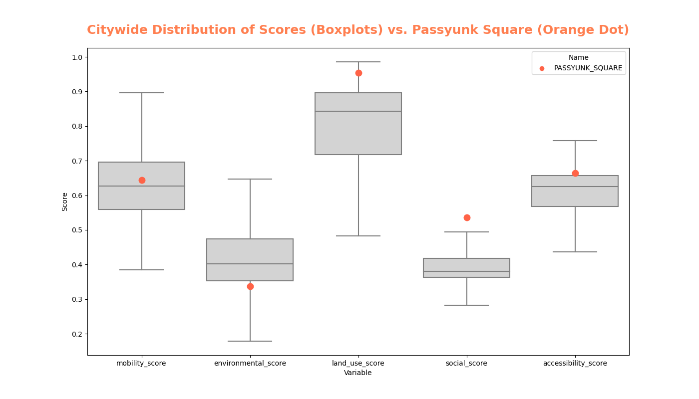
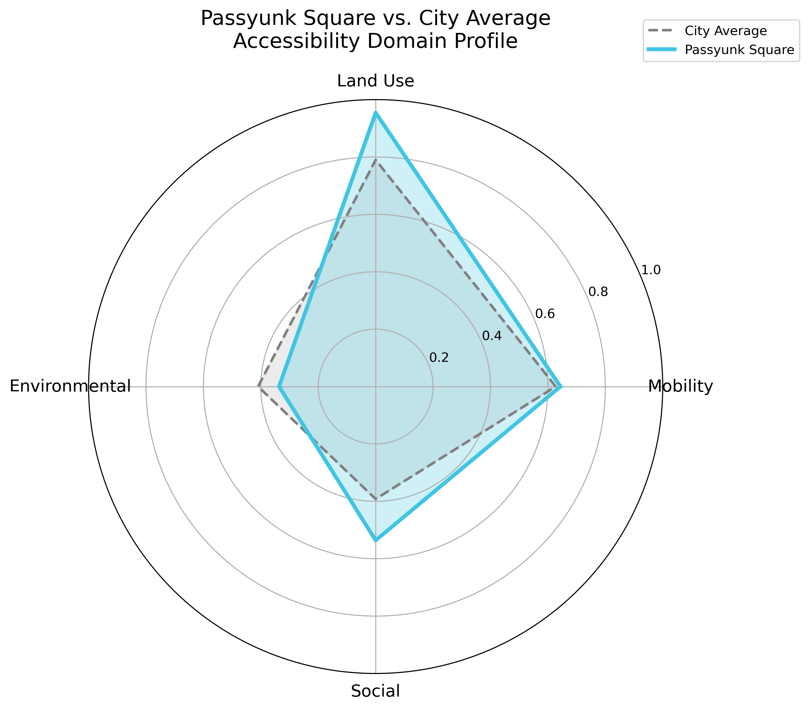
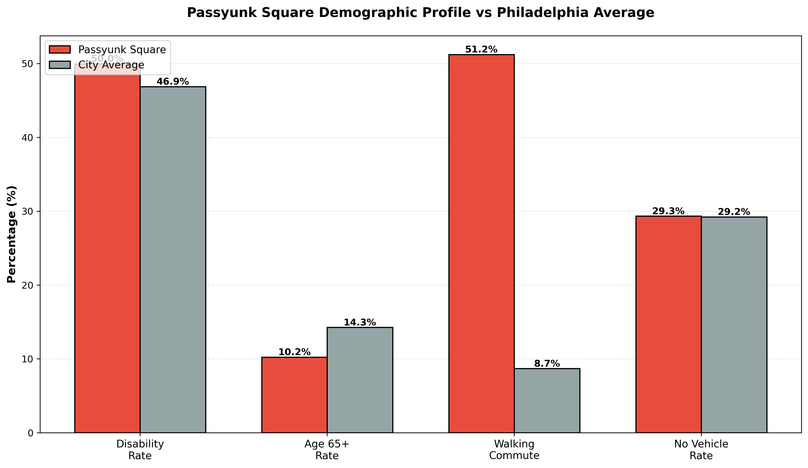

Results¶
This section presents the key findings from the Philadelphia Neighborhood Accessibility Analysis, including interactive visualizations, statistical summaries, and spatial patterns across all four accessibility domains.
Interactive Accessibility Map¶
Explore Philadelphia's neighborhood accessibility patterns using the interactive map below. Toggle between different layers to examine:
- Overall Accessibility Score (weighted composite)
- Mobility Score (infrastructure)
- Land Use Score (service access)
- Environmental Score (green space)
- Social Score (demographics)
Each neighborhood polygon displays detailed tooltips showing scores across all dimensions.
Summary Statistics¶
Citywide Score Distribution¶
| Component | Mean | Median | Std Dev | Min | Max |
|---|---|---|---|---|---|
| mobility_score | 0.627 | 0.627 | 0.119 | 0.232 | 0.946 |
| environmental_score | 0.410 | 0.403 | 0.091 | 0.065 | 0.719 |
| land_use_score | 0.790 | 0.842 | 0.157 | 0.093 | 0.986 |
| social_score | 0.392 | 0.380 | 0.048 | 0.283 | 0.536 |
| accessibility_score | 0.611 | 0.626 | 0.082 | 0.284 | 0.834 |
Note: All scores normalized to 0–1

Passyunk Square Performance¶
| mobility_score | environmental_score | land_use_score | social_score | accessibility_score |
|---|---|---|---|---|
| 0.644 | 0.336 | 0.954 | 0.536 | 0.665 |
Interpretation¶
- Mobility Score (0.644): Above city average (0.627)
- Environmental Score (0.336): Below city average (0.410)
- Land Use Score (0.954): Significantly above city average
- Social Score (0.536): Highest in the city
- Overall Accessibility (0.665): Places PSQ in the upper tier of neighborhoods
Correlation Analysis¶
Inter-Component Relationships¶
Strong Correlations (r > 0.60)¶
- Mobility ↔ Land Use (0.68)
- Land Use ↔ Social (0.52)
Weak / Negative¶
- Environmental ↔ Social (−0.15)
- Environmental ↔ Mobility (0.28)
Top and Bottom Performers¶
Top 10 Most Accessible Neighborhoods¶
| Rank | Neighborhood | Score | Strongest Component |
|---|---|---|---|
| 1 | SPRING_GARDEN | 0.83 | Land Use (0.93) |
| 2 | SPRUCE_HILL | 0.76 | Land Use (0.89) |
| 3 | DUNLAP | 0.75 | Mobility (0.95) |
| 4 | WEST_POPLAR | 0.74 | Land Use (0.94) |
| 5 | YORKTOWN | 0.74 | Land Use (0.91) |
| 6 | WEST_POWELTON | 0.73 | Land Use (0.93) |
| 7 | CENTER_CITY | 0.73 | Mobility (0.92) |
| 8 | FRANCISVILLE | 0.73 | Land Use (0.95) |
| 9 | RITTENHOUSE | 0.73 | Land Use (0.96) |
| 10 | WOODLAND_TERRACE | 0.72 | Land Use (0.87) |
Bottom 10 Least Accessible Neighborhoods¶
| Rank | Neighborhood | Score | Weakest Component |
|---|---|---|---|
| 149 | HOLMESBURG | 0.44 | Environmental (0.35) |
| 150 | BYBERRY | 0.43 | Social (0.32) |
| 151 | MECHANICSVILLE | 0.43 | Land Use (0.29) |
| 152 | INDUSTRIAL | 0.35 | Environmental (0.06) |
| 153 | NAVY_YARD | 0.28 | Land Use (0.09) |
| 154 | BURNHOLME | — | Social (0.36) |
| 155 | KINGESESSING | — | Social (0.42) |
| 156 | GERMANTOWN_WEST_CENTRAL | — | Social (0.36) |
| 157 | CALLOW_HILL | — | Social (0.38) |
| 158 | AIRPORT | — | Land Use (0.14) |
Missing values (NaN) result from neighborhoods with no intersecting tract-level ACS data or non-residential polygons.
Passyunk Square Case Study¶

Why Passyunk Square Scores Well¶
- Dense commercial & service corridor (East Passyunk Ave)
- Highly walkable street grid
- Health services within walking distance
- Very high walking-to-work rate
- Low disability & elderly rates
Opportunities for Improvement¶
- Lower tree canopy coverage than Northwest Philly
- Limited access to large parks
- Bike infrastructure not as strong as adjacent Bella Vista

Key Takeaways¶
1. Infrastructure is Foundational¶
Sidewalk completeness and bike density strongly predict accessibility outcomes.
2. Mixed-Use Development Matters¶
Walkable commercial corridors dramatically raise land-use scores.
3. Environmental Quality Varies Non-Linearly¶
Greener ≠ wealthier — Mt. Airy / Chestnut Hill outperform Rittenhouse.
4. Demographic Need ≠ Infrastructure Provision¶
High-need areas often have lower mobility infrastructure.
5. Center City Proximity Drives Accessibility¶
A clear accessibility gradient radiates outward from City Hall.
Implications for Planning¶
- Target sidewalk gaps in middle-scoring areas
- Identify healthcare deserts in North Philadelphia
- Expand tree planting in South/Southwest Philly
- Improve transit access in low-scoring periphery neighborhoods
- Prioritize ADA improvements in high-need, low-score areas
Next Steps¶
- Temporal analysis (2020–2025 trends)
- Equity overlay (income, race, health outcomes)
- Scenario modeling for planned transit + development
- Validation with resident perception surveys
Detailed Methodology¶
See full domain-specific methods here: